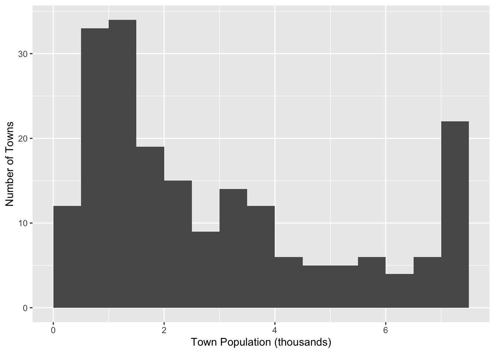

IO2 PS2 Bresnahan and Reiss (1991)
Problem 1 :
Reproduce the results for the tire dealers reported in Table 4 of the paper. Note that Bresnahan and Reiss (1991) estimate the model imposing the constraints \(\alpha_n \geq 0\) and \(\gamma_n \geq 0\). You should impose the same constraints.
Reproducing Figure 2 to get to know the data
Code
# Create the break values
breaks <- c(seq(0, 7.5, by = 0.5), Inf)
# Bin the 'TPOP' column into intervals
df <- data %>%
mutate(TPOP_binned = cut(TPOP, breaks = breaks, right = FALSE))
# Count the number of values in each bin
bin_counts <- df %>%
count(TPOP_binned)
# Plot the bar chart
ggplot(bin_counts, aes(x = TPOP_binned, y = n, width = 0.7)) +
geom_bar(stat = "identity", fill = "black", alpha = 0.8) +
labs(
x = "Town Population Range (000's)",
y = "Number of Towns",
)
Reproducing Table 3 to get to know the data
| Unique | Missing Pct. | Mean | SD | Min | Median | Max | |
|---|---|---|---|---|---|---|---|
| ID | 202 | 0 | 328090.8 | 143299.0 | 40013.0 | 320014.0 | 560045.0 |
| TIRE | 14 | 0 | 2.6 | 2.6 | 0.0 | 2.0 | 13.0 |
| TPOP | 195 | 0 | 3.7 | 5.4 | 0.1 | 2.1 | 45.1 |
| NGRW | 58 | 0 | -0.1 | 0.1 | -1.3 | 0.0 | 0.0 |
| PGRW | 119 | 0 | 0.5 | 1.1 | 0.0 | 0.1 | 7.2 |
| OCTY | 160 | 0 | 0.3 | 0.7 | 0.0 | 0.2 | 8.4 |
| OPOP | 178 | 0 | 0.4 | 0.7 | 0.0 | 0.1 | 5.8 |
| LANDV | 166 | 0 | 0.3 | 0.2 | 0.1 | 0.2 | 1.6 |
| ELD | 198 | 0 | 0.1 | 0.0 | 0.0 | 0.1 | 0.3 |
| FFRAC | 174 | 0 | 0.7 | 0.4 | 0.0 | 0.8 | 1.3 |
| PINC | 191 | 0 | 5.9 | 1.1 | 3.2 | 5.9 | 10.5 |
| LNHDD | 62 | 0 | 8.6 | 0.5 | 6.8 | 8.7 | 9.2 |
Main Task: Table 4
Create Log-Likelihood Function
Code
# Per-Capita Variable Profits
V = function(x, N, alpha, beta){
v = alpha[1] + beta[1]*x$FFRAC + beta[1]*x$ELD + beta[3]*x$PINC +
beta[4]*x$LNHHD + sum(alpha[2:N])
return(v)
}
# Market Size
S = function(x, lambda){
s = x$TPOP + lambda[1]*x$NGRW + lambda[2]*x$PGRW + lambda[3]*x$OCTY +
lambda[4]*x$OPOP
return(s)
}
# Fixed Costs
F = function(x, N, gamma){
f = gamma[1] + gamma[6]*x$LANDV + sum(gamma[2:N])
}
# Profits
P_bar = function(x, N, alpha, beta, gamma, lambda){
p = S(x,lambda)*V(x, N, alpha, beta) - F(x, N, gamma)
return(p)
}
loglike = function(par, x){
# Setting parameters
lambda = par[1:4] #4
beta = par[5:8] #4
alpha = par[9:13] #5
gamma = par[14:19] #6
# Profit for N firms
P_bar0 = P_bar(x, 0, alpha, beta, gamma, lambda)
P_bar1 = P_bar(x, 0, alpha, beta, gamma, lambda)
P_bar2 = P_bar(x, 0, alpha, beta, gamma, lambda)
P_bar3 = P_bar(x, 0, alpha, beta, gamma, lambda)
P_bar4 = P_bar(x, 0, alpha, beta, gamma, lambda)
P_bar5 = P_bar(x, 5, alpha, beta, gamma, lambda)
# Probabilities of 0-5+ entrants
Probs = c(0,0,0,0,0,0)
Probs[1] = 1 - qnorm(P_bar0) # no entrants
Probs[2] = qnorm(P_bar1) - qnorm(P_bar2) # 1 entrant
Probs[3] = qnorm(P_bar2) - qnorm(P_bar3) # 2 entrant
Probs[4] = qnorm(P_bar3) - qnorm(P_bar4) # 3 entrants
Probs[5] = qnorm(P_bar4) - qnorm(P_bar5) # 4 entrants
Probs[6] = qnorm(P_bar5) # 5+ entrants
# Log Likelihood
L = sum(log(Probs[x$TIRE-1]))
return(-L)
}